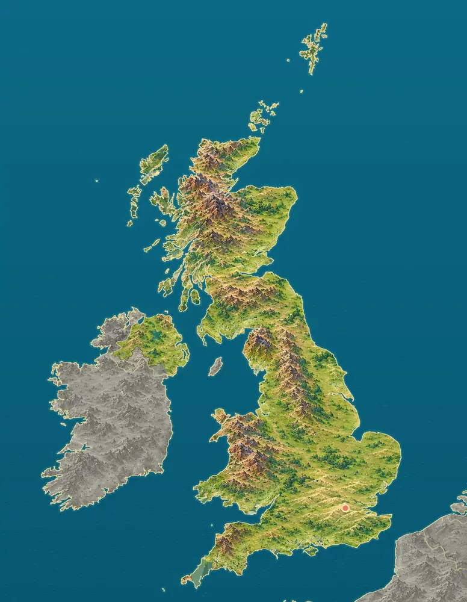
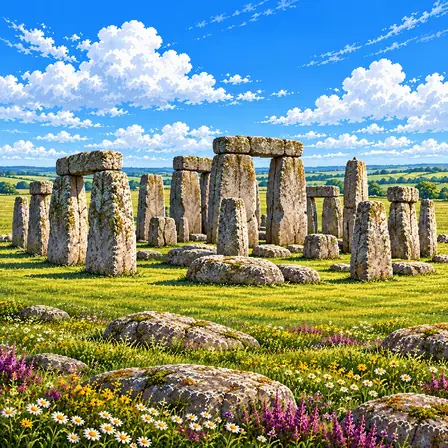
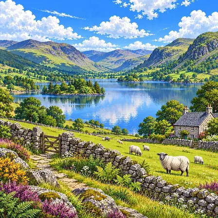
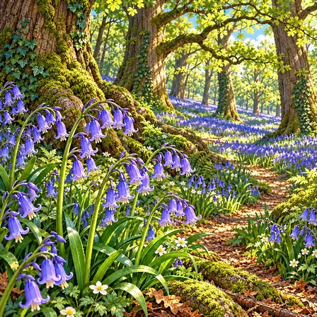
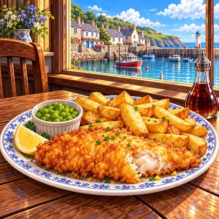

높은 북서쪽, 낮은 남동쪽
스코틀랜드 하일랜드와 잉글랜드 북부의 페나인산맥, 웨일스에는 산과 언덕이 많아요. 남쪽과 동쪽 잉글랜드에는 완만한 언덕과 넓은 농경지가 펼쳐져 있고, 수도 런던은 템스강 가에 있어요.
출처: National Geographic Society, Europe: Physical Geography · Natural Earth, Land, 1:50m

영국은 유럽 대륙 옆의 섬나라예요. 북쪽 스코틀랜드에는 높고 거친 산이 있고, 남쪽 잉글랜드는 낮은 들판이 넓어요.
영국은 그레이트브리튼섬과 아일랜드섬 북동부(북아일랜드), 주변의 섬들로 이루어져 있어요. 북쪽과 서쪽은 높고 거친 땅, 남쪽과 동쪽은 낮은 평야로 나뉘어요.
스코틀랜드 하일랜드와 잉글랜드 북부의 페나인산맥, 웨일스에는 산과 언덕이 많아요. 남쪽과 동쪽 잉글랜드에는 완만한 언덕과 넓은 농경지가 펼쳐져 있고, 수도 런던은 템스강 가에 있어요.
출처: National Geographic Society, Europe: Physical Geography · Natural Earth, Land, 1:50m
빙하기에는 영국 북쪽이 두꺼운 얼음에 덮여 있었어요. 얼음이 깎은 깊은 골짜기에 물이 고여 스코틀랜드에는 길쭉한 호수(로크)가, 잉글랜드 북서부에는 호수 지방이 생겼어요.
영국은 잉글랜드·스코틀랜드·웨일스·북아일랜드로 이루어져 있어요. 동쪽에는 북해, 남쪽에는 영국해협, 서쪽에는 대서양과 아이리시해가 있어요. 맨섬은 영국 왕실령으로, 영국에 속하지는 않아요.
출처: GOV.UK, Crown Dependencies: Jersey, Guernsey and the Isle of Man · Natural Earth, Land, 1:50m
스코틀랜드 북쪽 바다에는 오크니 제도와 셰틀랜드 제도가, 서쪽에는 헤브리디스 제도가 있어요. 해안선은 바닷물이 들어온 좁은 만과 절벽으로 매우 들쭉날쭉해요.
북아일랜드 해안의 자이언츠 코즈웨이에는 육각형에 가까운 현무암 돌기둥이 약 4만 개 있어요. 아주 오래전 흘러나온 용암이 천천히 식으면서 갈라져 기둥 모양이 되었어요.
잉글랜드 남쪽의 쥐라기 해안은 약 155km 길이의 바닷가 절벽에 약 1억 8,500만 년 동안 쌓인 지층이 드러난 곳이에요. 공룡 시대 생물의 화석이 많이 나와요.
영국에서 잘 알려진 도시, 역사유산, 자연, 식물, 문화, 음식, 동물, 인사말, 국기를 한 장씩 그렸어요.
런던은 영국의 수도예요. 2,000년쯤 전에 강가에 세워진 오래된 도시예요. 세계에서 처음으로 지하철이 달린 곳이에요.
런던은 영국의 수도로 인구 약 900만 명이 살아요. 기원후 43년 로마군이 들어온 뒤 47~50년 무렵 템스강 북쪽 기슭에 세운 '론디니움'에서 시작됐어요. 로마 시대 성벽 일부가 지금도 시티오브런던에 남아 있어요. 1666년 런던 대화재 후 도시를 재건했으며, 세계 최초의 지하철이 1863년 이 도시에서 운행을 시작했고, 19세기에는 근대적인 공공 하수도도 만들어졌어요.

스톤헨지는 커다란 돌들을 동그랗게 세워 둔 곳이에요. 4,500년쯤 전에 세워졌어요. 왜 만들었는지는 아직도 수수께끼예요.
스톤헨지는 잉글랜드 솔즈베리 평원에 있는 거대한 원형 돌 구조물이에요. 약 3,000~2,500 BCE에 세워진 것으로 추정돼요. 큰 사암 돌(사르센)은 평균 25톤으로 북쪽으로 약 25km 떨어진 곳에서, 작은 푸른 돌(블루스톤)은 200km가 넘게 떨어진 웨일스 프레슬리 언덕에서 옮겨 왔어요. 돌들은 하짓날 해가 뜨는 방향과 동짓날 해가 지는 방향에 맞춰 세워졌어요. 정확한 제작 목적은 아직 미스터리이며 유네스코 세계유산이에요.

레이크 디스트릭트는 호수와 산이 어우러진 곳이에요. 옛날 빙하가 땅을 깎아 호수 16개를 만들었어요. 1951년에 국립공원이 되었어요.
레이크 디스트릭트는 잉글랜드 북서부의 아름다운 호수 지대예요. 약 4억 년 전 지각 충돌로 형성된 산악 지형이 빙하기 침식으로 다듬어져 16개의 호수가 만들어졌어요. 워즈워스·존 러스킨 등 시인과 화가들에게 영감을 준 곳이에요. 1951년 국립공원으로 지정됐고, 2017년 유네스코 세계유산에 등재됐어요.

블루벨은 봄 숲에 피는 종 모양의 파란 꽃이에요. 꽃이 한꺼번에 피면 숲 바닥이 파란 물결처럼 보여요. 전 세계 블루벨의 절반쯤이 영국에서 자라요.
블루벨은 영국의 봄 숲에서 볼 수 있는 꽃이에요. 4~5월에 종 모양의 작은 파란 꽃이 군락을 이루면 숲 바닥이 파란 물결처럼 보여요. 오래된 고대 숲(Ancient Woodland)의 지표 식물로, 전 세계 블루벨의 절반쯤이 영국에서 자라요. 영국인들이 가장 사랑하는 야생화 중 하나예요.
킬트는 스코틀랜드 남자들이 입는 체크무늬 치마예요. 체크무늬는 집안마다 달라서 무늬로 어느 집안인지 알 수 있었어요. 백파이프를 연주할 때 멋지게 차려입어요.
킬트는 스코틀랜드 남성들이 입는 체크무늬 치마형 전통 의상이에요. 타탄이라 부르는 체크무늬는 오늘날 가문(클랜)마다 고유한 무늬가 정해져 있어요. 스코틀랜드 정부의 타탄 등록부에 올라간 무늬만 1만 가지가 넘어요. 허리에는 스포란이라는 작은 가죽 주머니를 차고, 백파이프를 연주할 때 정장으로 갖춰 입어요. 오늘날에도 결혼식과 하이랜드 게임 축제에서 자랑스럽게 입어요.

피시 앤 칩스는 생선 튀김과 굵은 감자튀김이에요. 겉은 바삭하고 속은 부드러워요. 레몬과 식초를 뿌려 먹어요.
피시 앤 칩스는 흰살생선에 밀가루 반죽을 입혀 튀기고 굵은 감자튀김을 곁들인 영국 대표 음식이에요. 1860년대에 첫 가게가 문을 연 뒤 노동자들의 든든한 한 끼로 자리 잡았어요. 대구나 해덕 같은 생선을 쓰고, 반죽에 거품을 내어 튀겨 겉이 바삭해요. 으깬 완두콩과 레몬, 식초를 곁들여 먹어요. 예전에는 신문지에 싸 주었고, 지금도 영국 전역에 1만 곳이 넘는 전문점이 있어요.
불독은 납작한 코와 주름진 얼굴을 가진 개예요. 무뚝뚝해 보이지만 순하고 참을성이 많아요. 코가 짧아서 더위에 약해요.
불독은 납작한 코와 주름진 얼굴, 단단하고 낮은 몸을 가진 영국 원산의 개예요. 어깨가 넓고 다리가 짧아 무게 중심이 낮은 독특한 체형이에요. 코가 짧아 더위에 약하기 때문에 시원한 곳에서 쉬는 것을 좋아해요. 무뚝뚝해 보이는 얼굴과 달리 성격이 온순하고 참을성이 많아 가정견으로 사랑받아요. 19세기부터 지금의 모습으로 길러졌으며, 영국을 상징하는 동물로 자주 등장해요.
헬로(Hello)는 영어의 기본 인사예요. 언제든 누구에게나 쓸 수 있어요. 전 세계에서 15억 명쯤이 영어를 써요.
Hello는 '헬로'라고 읽는 영어의 기본 인사말이에요. 영어는 영국에서 시작된 게르만어족 언어로, 라틴어와 프랑스어 낱말을 많이 받아들이며 풍부해졌어요. 영국에서는 지역마다 억양이 달라 말씨만 듣고도 어느 지방 사람인지 짐작할 수 있어요. 전 세계에서 영어를 쓰는 사람은 배우는 사람까지 합치면 15억 명에 달해요. 시간과 상관없이 언제든 쓸 수 있는 가장 무난한 인사예요.

영국 국기는 '유니언 잭'이라고 불려요. 잉글랜드, 스코틀랜드, 아일랜드의 십자 무늬를 하나로 합쳤어요. 위아래가 달라서 거꾸로 달면 안 돼요.
영국 국기는 '유니언 잭'이라고 불리며, 세 개의 십자가 겹쳐진 디자인이에요. 잉글랜드의 빨간 십자, 스코틀랜드의 흰 대각선 십자, 아일랜드의 빨간 대각선 십자를 하나로 합쳤어요. 여러 지역이 한 나라를 이룬 역사가 깃발 안에 그대로 담겨 있어요. 지금의 모습은 1801년에 완성됐어요. 위아래가 비대칭이라 뒤집어 달면 틀린 게 되는, 까다로운 국기로도 유명해요.